✨ Last Words ✨
Crafted with love for an extraordinary soul...
💖
💕
💗
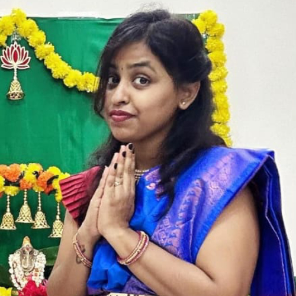

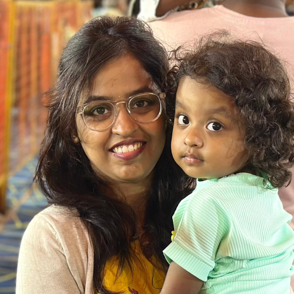
I am writing this after carrying many feelings silently for a very long time.
sudden decision kaadu. Chala ante chalaaa think chesa last 1 or 2 weeks nundi.
For more than 9 years, you have been a part of my heart, my thoughts, and my life. Na love naaku real, deep, sincere. Time tho adi taggaledu… just struggles tho silent ga undipoyindi.
Along with love, there has also been pain. Anger valla kaadu, but wait chestu, hope pettukoni, ardham chesukotaniki try chestu vachina pain.
Nenu inka ikkada unna reason okate — It's impossible for me to continue the life without your presence.
Nenu ila chepthunna ante, ninnu blame cheyyadaniki kaadu, leda nee decisions ni question cheyyadaniki kaadu. Nee life, nee responsibilities ni, nenu respect chestunna. But at the same time, nenu naaku honest ga undali. Ee love ni, ee pain ni okesari carry cheyyatam ippudu naaku chala heavy ga anipistondi. Idi emotional impulse kaadu.
Idi years of waiting, and feelings taruvatha vachina clarity.— nenu oka clear decision teesukovali. Silent ga undi, lopala break avadam kanna, truth tho munduku velladam better ani anipinchindi.
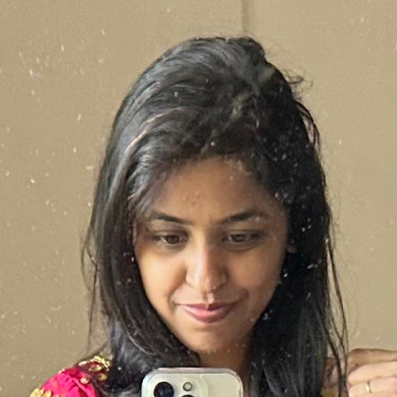
Seriously, it is not easy to put into words what you truly mean to me. But I wanted to tell you what you mean to me.
After my mother, nenu naa happiness ni first share chese person nuvve. Whenever something good happened in my life, nee reaction kosam wait chesevadini. Because somehow, nee smile made my happiness feel complete.
When I was low, nuvvu undadam chalu anipinchedi. Sometimes with words, sometimes just by listening — nee presence itself gave me strength. Even today, when I look back at these years, nee role naa life lo ordinary kaadu. You shaped the way I loved, the way I trusted, and the way I believed in emotional connection.
Still I couldn't believe myself that I am degrading myself for a girl. Nenu okkate feel ayya…Amma kosam, Ne kosam nenu beggar ipoina parledu anipstadi.
Again saying YOU R MY MOTHER. I am not saying it to make you emotional.. I am saying it to make you understand what you mean to me.
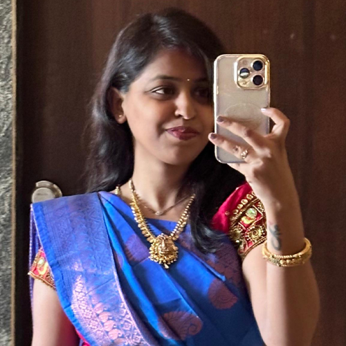
Yes, seriously… I acknowledge that I didn’t do anything to you.
Because the only thing I truly did was loving you—and even that love was restricted.
Naa love ki limits pettav.
Naa care ki boundaries pettav.
Naa life ki fullstop peduthunnav ippudu.
But inside, adi chala heavy.
Every time I wanted to be there more,
every time I wanted to do something openly,
Nannu aapesav.
I accept this honestly. Nenu nee kosam em cheyyaledu.
Because loving you silently, respecting your situation, and holding myself back
doesn’t look like effort to the outside world.
Incase nuvvu nijanga nannu ila restrict cheyakunda undi unte…inkola undedi…couldn't say in words.
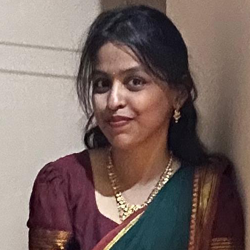
I want you to understand this calmly, without any misunderstanding or emotion mixed in.
There is a clear difference between me and your husband, and I accept that reality.
I am not the person who is with you every day to take care of you when something happens.
Nenu Nee pakkana undi responsibilities carry cheyyagalige position lo lenu.
I am not the one who can surprise you on special occasions,
or stand beside you during celebrations,
or give you the things you wish for when you need them,
or take you to the places where you want to go.
But He has done those things for you. That’s why you accepted him as husband and given yourself to him.
Ofcourse nuvu chepthunnav, 4 years ala wait cheincha ani… But Okkasari nenu ne meeda unchina nammakam gurthu undi unte, seriously jarigedi kadu emo. Nijanga nuvu cheppinappudu , Na body antha challaga ipoindi..took time to come back to normal.
Nenu nuvvu ikkada wrong ani cheppatledu…Manakosam okaru edina chesthunnaru ante, Seriously anipistundi vaalani hurt cheyakunda , Happy ga choosukovalani…I respect that.
I stick on my words…..Papa neku tanaki physical ga jarigi puttina, I am ready to accept and always ready to accept.
The difference is not about love alone,
it is about presence, responsibility, and place.
And that difference changes everything and brings life time pain to someone for sure.
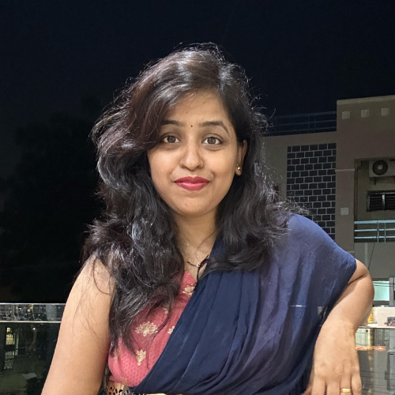
There are some feelings I never exposed until now. Not because they were small—but because I didn’t know how to say them without breaking myself. Over these last 9 years, I have come to know myself deeply. I always knew I was living within limits—emotional limits, situational limits, silent limits. But today, I know one thing clearly: I can’t carry this truth alone anymore.
At the very beginning of my career, from my first earnings, I bought something for you. For that, I struggled a lot. I saved slowly, patiently—naa financial position entha weak undo eppudu cheppaledu. Because I believed, “Idi nenu nuv na wife ayyaka cheppali anipinchindi.” I tried many times to make you wear that ring. Chala try chesanu. But somehow, it was never meant to happen. I have been waiting for that moment for seven years. Even today… adi naa daggara ne undi.
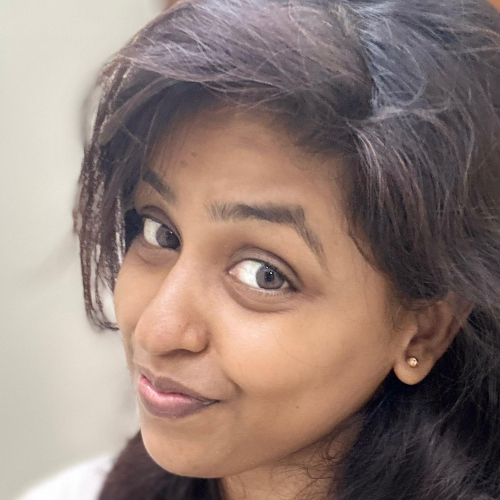
Do you know something?
Actually narasimha(BIL) ki cheppanu, e ring okarikosam konnanu ani chala days back. During the marriage discussions, my brother-in-law once said—
“Gold rate chala high undi kada durga. Ring konadam additional burden avtundi. elago tanaki marriage ipoindi kada, ivvalev kada, Better idi Dhana ki ivvu ee marriage ki.”
Nenu simple ga ‘NO’ cheppanu. Because nenu chalaaaa… ante chalaaaa istam tho preminchina naa vanduuu ki ivvali ani wait chestunna. That was never just a ring for me. Adi naa dreams, naa struggles, naa silent promises anni kalipi unna oka symbol.
If that moment never comes,
then that thing will stay with me forever—
if my life is getting doubtful, I seriously recommend my friends to place that ring on me before burying.
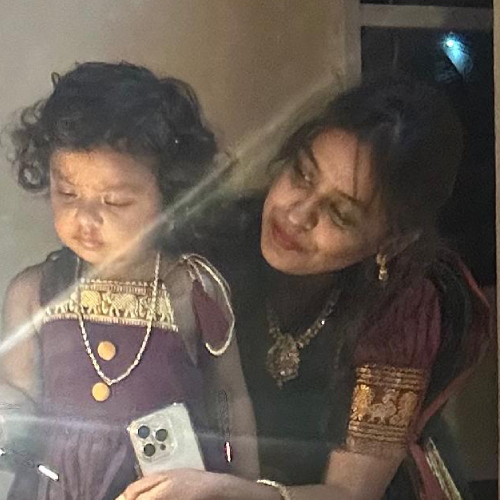
Naku inka em dachalani anipinchatledu....Na feelings ni neku express cheyali...I am telling you about myself completely... See Just think e 9 years eppudina apart from arguments, conflicts...Neetho Misbehave chesana...I respect you more than anything in my life after my mother. Ofcourse cheater annanu..Na feelings ni care cheyatledu ani..anthe kani okkasari kuda a abusive word vaadaledu..becoz naku raavu kabatti...Moreover ninnu em analani kuda anipinchadu....Enduku telsa.Nenu eppudu netho kotladuthane tappa...tanakosamithe chesthav, Nakosam em chesthavule antanu tappa...eppudu bad words vaadaledu...
E 9 years nuve kavali antunna...Becoz I am seeing You as my wife only.... Actually friends discussions lo adugutharu Nuvu virgin aa ani nannu...Yes ra ante vaalu nammaru..Nuvu software lo unnav le baga enjoy chesi untav ani...But i knew myself... Mother Promise I am still virgin....Becoz Naku seriously Nuvu tappa vere vaddu ani fix ayya....Ippatiki kuda nuve kaavali antunna...
You know I used to get feelings, I wanted to hug you and i wanted to kiss you... Neku na feelings ni ela cheppalo teliaka ala GIFs send chesevadini, Atleast appudina artham chesukuntav ani. aa GIF files pampinchetappudu kuda,, Enthaga think chestha telsa nannu malli tappuga anukuntundemo ani...kani okate thought enti ante,, nenu tanani na wife ga anukuntunna...So i am not doing anything wrong ani send chesevadini....Sometimes telsa....I used to kiss on your pics when i felt missing you ...I used to cry alot for you. That i can't explain you in words.
Nenu chala introvert Vandu...Adi neku teliadu...Naku na friends, illu tappa...Ekkada involve kuda avvanu. Nenu eppudu okate think chestha...Nenu Na wife tho thappa , Vere vallatho emi cheyakudadu ani....You know ippatiki enduku antha badapaduthunna telsa, Nuvu vastunnav ani cheppav station ki, Bayatiki ravatam possible awthada ani adiga, Nuvemo avvadu annav, Ika literally Ring ivvalenemo ani, Adi intlo ne pettesa...Ika emunnai neku ivvadaniki ani think chesa..
Time sometimes assist us anipinchindi. Endukante aa next day ne choclate day...Ika choclate tesukoni ventane vachesa railway station...Neku teliadu ra nuvu vachenthavaruku, Nenu asalu kurcholedu, tiruguthune unna..Nervous plus happiness tho...Ika train vachesaka.. ninnu choodagane literally happytears and nervous...Ala hug chesukodaniki attempt chesthundaga
nuvu hug chesukodaniki discomfort ga feel ayyav. still FEB 8 ni marchipolenu ra...Nenu ippati daka a ammai ni hug chesukoledu ra...First tym ala ne daggariki ragane chala ante chala happy and nervous tho vacha hug chesukodaniki..that too its our first meet...But nuvu chala discomfort feel ayyesariki I became calm even you used to say that you love me…
now I could understand, Ikkada tananey nuvu husband la feel ayyav...nenu eppatiki kadu ani artham ayindi…Vanduuuuuu....see nuvu tanatho physical ayyav ani ne meeda unna respect and love eppatiki podu. Becoz still you are my wife anukuntunna. Nuvu nannu husband la feel avvakapoina. Nuvu nannu deserve kanu ani anukunna… But eppudithe nuvu tanatho physical ga move on ayyyavo even nenu unna kuda…Appude nuvu tanani accept chesesav ne husband ga…Adi nekey telsu….
Ikkada ninnu ne character ni ekkada question cheyatledu ra….nuvvu annav ga ne duty nuvu chesthunnav ani..Thats true… Just okkasri from my end think chei…. Nenu nuvvu tanatho unna pic choosthene etla feel awtha ra..alantidi emantav ra nuvvu inka alantivi 8000 pics unnai send chestha antav..etla untadi ra naku nuve cheppu….malli nuve antav bayatiki memu just husband and wife matrame ani..Mari enti vandu ala….
Ikkada I want to make you understand that You acknowledged him as your husband ra. That you can say directly. Anduke everytime adugutha na valla problem ithe cheppu ani…But nuvu cheppaledu eppudu..Nene artham chesukovalsindi,,,Its my fault ra becoz its not so easy to go away from u.. Anduke ennisarlu conflicts ina malli malli vacha nene…
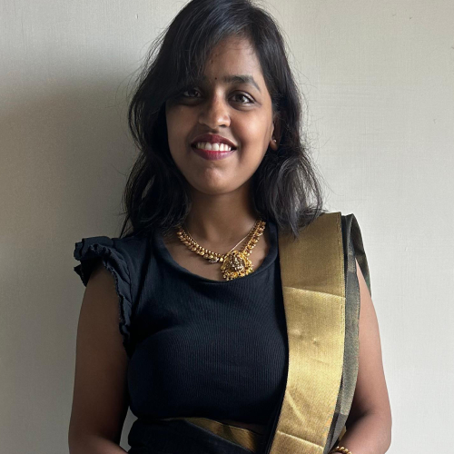
Ippatiki nuvve kaavali anukuntunna ra..Endukante literally morning levagane ne nundi msg lekunte seriously chala ante chala kastanga untadi...Emina share chesukovali ante amma tarvata gurthochedi nuvve...Edina sare neku cheppalanipistundi neku share cheyalanipistundi.....
Gud turn, edo annav kada... See papa undi ani telsina kuda malli vachanu..nuve kavaali ani vachinodini ra....Nuvu papa kuda physical ga puttaledu ani recently cheppav....Nuvu physical ga tanatho move ayyav ani...Nenu Na pilla anukunna ammai ni ala character gurinchi na life lo eppatiki feel avvanu....Nakosam, nuvu suicide chesukuntanu anesariki...Nakey chala ante chala edupochesindi....Nenu preminchina ammai chanipovadam korukunte ika nenu chesindi love aa kadu anipinchindi....Anduke nenu atleast nuvu cheppinatlu pelli chesukunta ani cheppa.... Daniki nuvu na 9 years Love ni matram question cheyaku vandu please.... Nuvu eppudu NR ane pilustav, first time ala narasimhadurga prasad ani pilichav...chala ante chalaaa badesindi...Block chesesav nannu calls cheyanivakunda...Ika ikkada kuda block chesthanu antunnav
Ippatiki Naku nuvve kaavali anipistundi…
Anduke Malli Malli aduguthunna….I still wanna marry you..nuve annav, neku aa satisfaction ina istanu ani maata kuda ichav.. But Nuve antunnav…Em cheyalenu ani…Nenu neku deserve kanu ani...Inka nenu ninnu request chesukunte….Adi chala ante chala cheap ipothadi…Nuve antunnnav nannu cheap ga matladuthunnav ani..
Kani Malli aduguthunna ra, Na valla nijanga problem awthadi ante.....Seriously I am done.....Nenu Ika na life lo eppatiki Disturb cheyanu ninnu...Nene amma ni choosukovali...Anna anthga involve avvadu...Dhana ikkada undadu... So nene choosukunta manchiga...Becoz na life lo, Chelli pelli, amma health, Netho Na pelli anukunna....adi jaragadu antunnav......Ika ne decision Vandu.....Nuvu Nijanga nenu ne life lo undali anukunte...Nuvve unblock chesi naku call chesi matladu new year lopu.... Incase cheyakapoina...Nenu tappuga anukonu Vandu....Becoz Ne life Nuvu Happy ga undali...Mana papa ni Baga choosuko...Meeru Vihana pettukunnaru kada...Nedi , Tana peru Vachela..But Nenu NirVana... ani petukuntunna....Manchi Upbringing tho penchu papa ni..Nuvu tanani alane penchuthunnav..I knew.
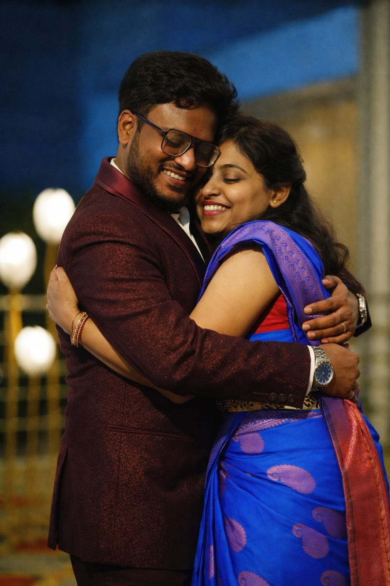
Atleast AI made my dream to visualize and here these are my dreams which i lived with:
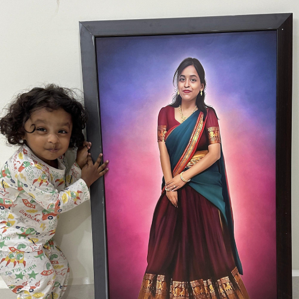